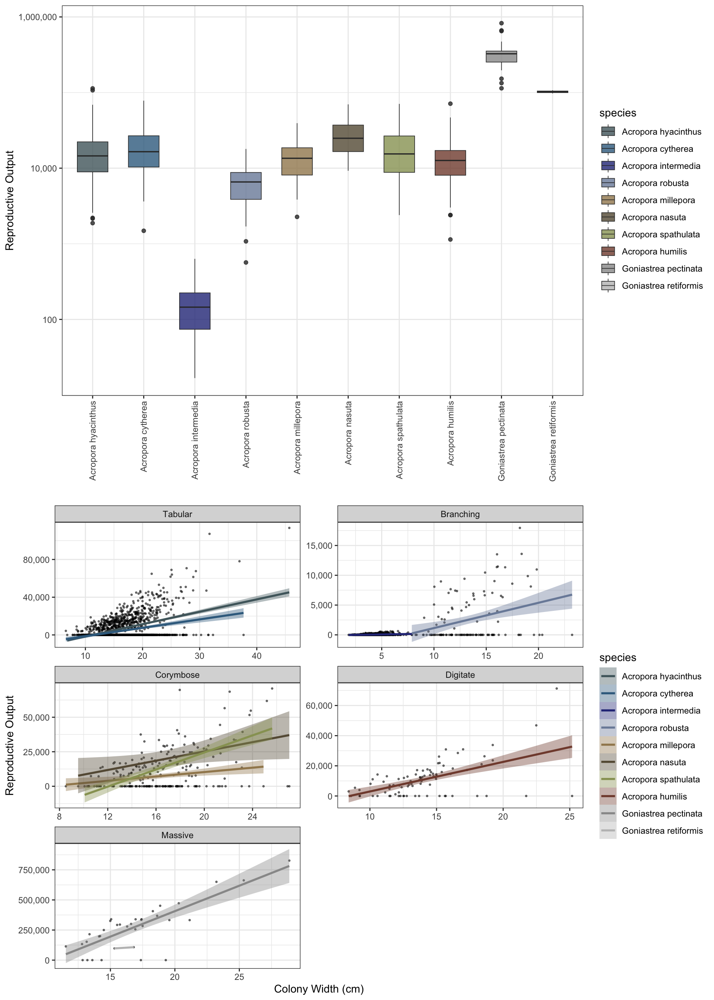

16 x 8 m plot
128 [m^2]Reefspawn workflow

1) Simulate reef area
simulate a reef plot 16m long by 8m wide (note: the default crs (EPSG:3857) is projected but not lon/lat degrees).
2) Simulate coral communities
Simulate coral communities at 40% cover within the 128 [m^2] plot. Communities are structured from 11 species across five different growthforms: tabular corals (Acropora cytherea, A. hyacinthus), corymbose corals (A. millepora, A. nasuta, A. spathulata), digitate corals (A. humilis, A. digitifera), branching corals (A. intermedia, A. robusta), and massive corals (Goniastrea pectinata, G. retiformis).
The function builds coral communities based on observed colony sizes from Lizard Island from 2009 to 2015 (~ 30 colonies from each of 11 species, Madin et al 2023) and simulates a 40% cover reef. Community structure is based on a pre-determined ratio of growth forms (tabular = 0.7, digitate = 0.075, corymbose = 0.125, branching = 0.08, massive = 0.02) that is assigned across the 11 species. The exact coral cover is stochastic and sampled from the beta distribution (alpha=12, beta=4) to vary ~40% cover when running multiple simulations. plot = TRUE returns a full summary of paramterisation.
for details see ?reefspawn::simulate_communities()
communities <- simulate_community(setplot = sf_plot,
coralcover=40,
size = coralsize,
ratiovar = 0.2,
alpha = 24,
beta = 8,
seed = 321,
plot = TRUE,
quiet = TRUE)
TableGrob (3 x 1) "arrange": 3 grobs
z cells name grob
1 1 (1-1,1-1) arrange gtable[arrange]
2 2 (2-2,1-1) arrange gtable[layout]
3 3 (3-3,1-1) arrange gtable[arrange]3) Simulate coral populations
From the simulated community output (% cover of each of the 11 species), simulate_populations() takes the output of bayesian model predictions for the size distributions (based on Lizard Island data) and simulates populations to fill the percent cover for each species. The function outputs either df - a dataframe of individals and size distribution, or an sf simple features with corresponding sizes and coordinates within the initial plot. The coral size data is included in the package in coralsize and can be replaced or updated with additional data for flexible parameterisation.
The spatial mapping in sf uses a species hierarchy approach to determining the most likely spatial competitor for initial population space, and sets a maximum overlap between colonies at random using a normal distribution (max 90% overlap) to simulate a spatially realistic coral population. The spatial coordinates of each colony are determined using a circle packing algorithm within the initial plot using an iterative pair-wise repulsion approach to find non-overlapping colonies in space. The approach is rapid (<2 mins) for small plots (<100m^2) and population densities <5000 colonies, but rapidly saturates and becomes time consuming above this number - for large plots subsetting into smaller plots (ideally using a a parallel approach) is computationally less taxing. The output is spatially referenced
for details see ?reefspawn::simulate_populations()
populations <- simulate_populations(setplot = sf_plot,
size = coralsize,
community = communities,
return="sf",
ndraws = 2000,
seed = 321,
interactive=TRUE,
quiet=TRUE)
head(populations)Simple feature collection with 6 features and 11 fields
Active geometry column: geometry
Geometry type: POLYGON
Dimension: XY
Bounding box: xmin: 3.917155 ymin: 0.02768323 xmax: 13.12523 ymax: 5.654727
Projected CRS: WGS 84 / Pseudo-Mercator
# A tibble: 6 × 13
id geometry species width area cumulative_area aerial
<int> <POLYGON [m]> <fct> <dbl> <dbl> <dbl> <dbl>
1 1 ((4.126517 0.1325715, 4.12… Acropo… 19.7 0.0305 305. 2.68e5
2 2 ((11.75122 5.558723, 11.74… Acropo… 17.3 0.0236 541. 2.68e5
3 3 ((5.179833 1.635097, 5.178… Acropo… 11.1 0.00972 638. 2.68e5
4 4 ((4.958945 4.664497, 4.956… Acropo… 13.8 0.0150 788. 2.68e5
5 5 ((13.12523 5.398767, 13.12… Acropo… 15.3 0.0184 972. 2.68e5
6 6 ((5.125676 5.488925, 5.123… Acropo… 12.6 0.0124 1096. 2.68e5
# ℹ 6 more variables: coords <POINT [m]>, zindex_id <int>, species.id <chr>,
# x <dbl>, y <dbl>, overlaparea <dbl>4) Map coral populations
map_populations visualises the output of simulate_populations in XY space. sum(populations$area) will return the combined area of corals, (sum(populations$area) / as.numeric(sum(st_area(sf_plot)))) *100 the percent cover.
for details see ?reefspawn::map_populations()
map_populations(setplot = sf_plot,
populations = populations,
interactive = FALSE,
webgl = TRUE)
5) Simulate spawning
simulate_spawning takes the colonies from populations and parameterises a per colony output of oocytes based on Bayesian models fit to data from Lizard Island (Álvarez-Noriega et al 2016). The function uses posterior_predict from the brms models to sample draws from the posterior predictive distribution of the observed data (i.e. adds model uncertainty + residual (observation-level) noise). For each colony, the function predicts the total number of polyps, proportion of the polyps that are reproductive (i.e. not within the sterile zone at growth margins), the number of oocytes per polyp, and the probability of colonies being reproductive (binomial).
$where:$'$- \( P \) = polyp density (polyps per cm²)$’ $- \( A \) = colony area in m²$'$- \( S \) = sterile proportion$‘$- \( O \) = oocytes per reproductive polyp$'$- \( R \) = reproductive probability$’
See the brm page for exact paramterisation and code for models. The model fits are included in the package (brm_fecundity, brm_probability, brm_polyp_density, brm_sizedistribution) and can be flexibly paramaterised with updated data.
for details see ?reefspawn::simulate_spawning()
reproductiveoutput <- simulate_spawning(populations = populations,
setplot = sf_plot,
seed = 1001,
quiet = FALSE,
plot = TRUE)[1] "2.892 sec elapsed - simulate_populations()"
[1] "22,874,275 - total reproductive output"
[1] "178,705 - reproductive output per m2"
TableGrob (2 x 1) "arrange": 2 grobs
z cells name grob
1 1 (1-1,1-1) arrange gtable[layout]
2 2 (2-2,1-1) arrange gtable[layout]To run large datasets or parallel processing / mulitcore use return="df"instead of return="sf" and bypass the sf functionality.
Example below for a hectare plot returns reproductive outputs from 96,490 colonies in 38 seconds
sf_plot_large <- setplot(100,100) 100 x 100 m plot
10000 [m^2]
hectare_output <- simulate_community(setplot = sf_plot_large,
coralcover=40,
size = coralsize |> dplyr::filter(year==2011),
seed = 321,
plot = FALSE,
quiet = TRUE) %>%
simulate_populations(community = .,
seed = 321,
return="df") %>%
simulate_spawning(populations = .,
seed = 321)
hectare_summary <- hectare_output |>
dplyr::group_by(species) |>
dplyr::summarise(output = sum(output)) |>
dplyr::mutate(output = format(output, big.mark = ",", scientific = FALSE)) %>%
dplyr::bind_rows(
dplyr::summarise(., species = "Total", output = format(sum(as.numeric(gsub(",", "", output))), big.mark = ","))
)
hectare_summary |> print(n=12)# A tibble: 11 × 2
species output
<chr> <chr>
1 Acropora cytherea " 740,055,247,996"
2 Acropora humilis " 860,564,925,512"
3 Acropora hyacinthus "1,195,120,571,656"
4 Acropora intermedia " 12,919,122,014"
5 Acropora millepora " 958,865,053,429"
6 Acropora nasuta " 649,821,757,716"
7 Acropora robusta " 293,451,466,713"
8 Acropora spathulata " 570,747,316,047"
9 Goniastrea pectinata "8,927,909,724,634"
10 Goniastrea retiformis " 180,496,212,782"
11 Total "1.438995e+13"